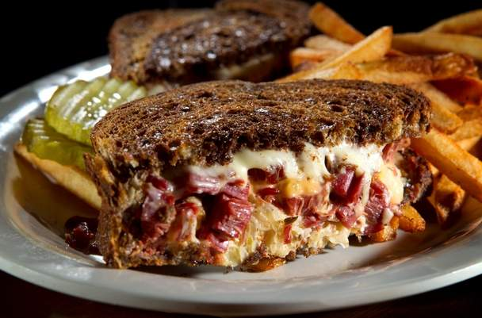

Reuben sandwich

The Reuben sandwich is a North American grilled sandwich composed of corned beef, Swiss cheese, sauerkraut, and Thousand Island dressing or Russian dressing, grilled between slices of rye bread. It is associated with kosher-style delicatessens, but is not kosher because it combines meat and cheese.
Ingredients
- 2 slices rye bread
- Thousand island dressing
- 3oz sauerkraut (drained)
- 2 slices Swiss cheese
- 3 slices corned beef
- 1 slice butter
Steps
- Heat a skillet or panini press, add butter when hot
- Lay first slice of cheese on one slice of rye
- Spread thousand island dressing atop cheese
- Lay all corned beef slices atop the cheese and dressing.
- Spread sauerkraut atop corned beef
- Lay final cheese slice atop sauerkraut
- Close the sandwich
- Press or fry both sides of sandwich until cheese melts.